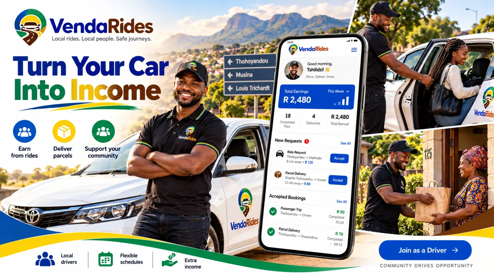

Search your route
Choose your pickup, destination and travel date.
Find community drivers, reserve your seat and send parcels between Venda, Limpopo and Gauteng, all in one place.
Search live trips posted by participating drivers.
Choose your pickup, destination and travel date.
Compare available seats, fares and verified status.
Request your seat and coordinate your safe pickup.
One-way full-route base fares per passenger. Subject to driver availability.
From 06:30
R500From 12:00
R500From 17:00
R550From 21:00
R650Gate pickup/drop-off by prior arrangement from R120 extra, depending on the detour. Standard pickups use approved main points along the route.
Need to send something between Venda and Gauteng? Post a parcel request and connect with drivers who accept parcels on their routes.
Publish your independent trips, manage your own vehicle and accept bookings when you're available. Verification and applicable transport approvals are required.

Built for local communities, with practical tools to help people travel more confidently.
Driver approval status is shown clearly. Only verified, eligible drivers may offer bookings.
Share your location with consent while the app is open. Location updates may stop in the background.
Report incidents and save emergency contacts in your private account.
Install on supported Android devices or use Add to Home Screen on iPhone.